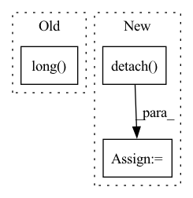

Pattern ID :9337
Before Change
self.model_rank * self.model_batch_size
)
*all_X, target = [batch[0][v] for v in self.output_map]
target = target.squeeze(-1).long()
return indexes, all_X, target
class Wrapper(BaseWrapper):After Change
.clone()
)
all_X = [x.detach() .clone() for x in all_X]
return [indexes, all_X, targets]
In pattern: SUPERPATTERN
Frequency: 4
Non-data size: 3
Instances Fragment ID: 33476687
Project Name: vturrisi/contrastive-learning
Commit Name: e90d420fa19620f36fead1b1a5b4c3478d59dd8a
Time: 2021-08-13
Author: enrico.fini@gmail.com
File Name: solo/methods/dali.py
M Class Name: PretrainWrapper
N Class Name: PretrainWrapper
M Method Name: __next__(1)
N Method Name: __next__(1)
M Parent Class: BaseWrapper
N Parent Class: BaseWrapper
M File Name: solo/methods/dali.py
N File Name: solo/methods/dali.py
M Start Line: 60
M End Line: 66
N Start Line: 73
N End Line: 97
Before Change
r = pad_sequence(r, padding_value=pad_val).squeeze()
mask = (q != pad_val)
q, r = q * mask.long(), r * mask.long()
delta = one_hot(q[1:], self.num_q)
target = r[1:]
After Change
test_y = (self(test_questions, test_responses) * test_delta)\
.sum(-1)
test_y = torch.masked_select(test_y, test_masks).detach()
fpr, tpr, thresholds = metrics.roc_curve(
test_targets.numpy(), test_y.numpy()
) Fragment ID: 33476684
Project Name: hcnoh/knowledge-tracing-collection-pytorch
Commit Name: 02fafdf350373b54da7e953cb2177109fba73d7f
Time: 2021-03-15
Author: rhc0624@gmail.com
File Name: models/dkt.py
M Class Name: DKT
N Class Name: DKT
M Method Name: train_model(5)
N Method Name: train_model(5)
M Parent Class: Module
N Parent Class: Module
M File Name: models/dkt.py
N File Name: models/dkt.py
M Start Line: 47
M End Line: 131
N Start Line: 47
N End Line: 151
Before Change
bag_logits, bag_labels, bag_attn_list = self.compute_bag_labels_logits_and_attn_maps(batch)
if self.n_classes > 1:
loss = self.loss_fn(bag_logits, bag_labels.long() )
else:
loss = self.loss_fn(bag_logits.squeeze(1), bag_labels.float())
After Change
results = dict()
if self.analyse_loss and stage in [ModelKey.TRAIN, ModelKey.VAL]:
loss_per_sample = self._compute_loss(self.loss_fn_no_reduction, bag_logits, bag_labels)
results[ResultsKey.LOSS_PER_SAMPLE] = loss_per_sample.detach() .cpu().numpy()
bag_labels = bag_labels.view(-1, 1)
Fragment ID: 33476681
Project Name: microsoft/hi-ml
Commit Name: e2c1ca1cb4d224378df8209befd08e7ebcc136d5
Time: 2022-10-12
Author: 37396332+kenza-bouzid@users.noreply.github.com
File Name: hi-ml-cpath/src/health_cpath/models/deepmil.py
M Class Name: BaseDeepMILModule
N Class Name: BaseDeepMILModule
M Method Name: _shared_step(4)
N Method Name: _shared_step(4)
M Parent Class: LightningModule
N Parent Class: LightningModule
M File Name: hi-ml-cpath/src/health_cpath/models/deepmil.py
N File Name: hi-ml-cpath/src/health_cpath/models/deepmil.py
M Start Line: 302
M End Line: 325
N Start Line: 311
N End Line: 334
Before Change
else:
phis = torch.vstack(torch.tensor([None for i in range(len(N_mask))])).t()
// calc number of negatives and return the highest mirror
neg_phis = (phis < 0).long() .sum(axis=-1)
return preds[torch.argmax(neg_phis)]
def fix_mirrors_numpy(preds, N_mask, CA_mask):After Change
Angle Phi between planes: (Ca{-1}, N, Ca{0}) and (Ca{0}, N{+1}, C_a{+1})
ns = preds.t(-1, -2)[N_mask][1:].detach()
cs = preds.t(-1, -2)[CA_mask].detach()
// compute phis and count lower than 0s
phis_count = []
for i in range(cs.shape[0]):
phis = [] Fragment ID: 33476690
Project Name: lucidrains/alphafold2
Commit Name: 1b677161a6a5c024c430e8726702cb132d7175d7
Time: 2021-01-06
Author: ericacaide1@gmail.com
File Name: utils.py
M Class Name: AnonimousClass
N Class Name: AnonimousClass
M Method Name: fix_mirrors_torch(3)
N Method Name: fix_mirrors_torch(3)
M Parent Class:
N Parent Class:
M File Name: utils.py
N File Name: utils.py
M Start Line: 147
M End Line: 154
N Start Line: 147
N End Line: 157